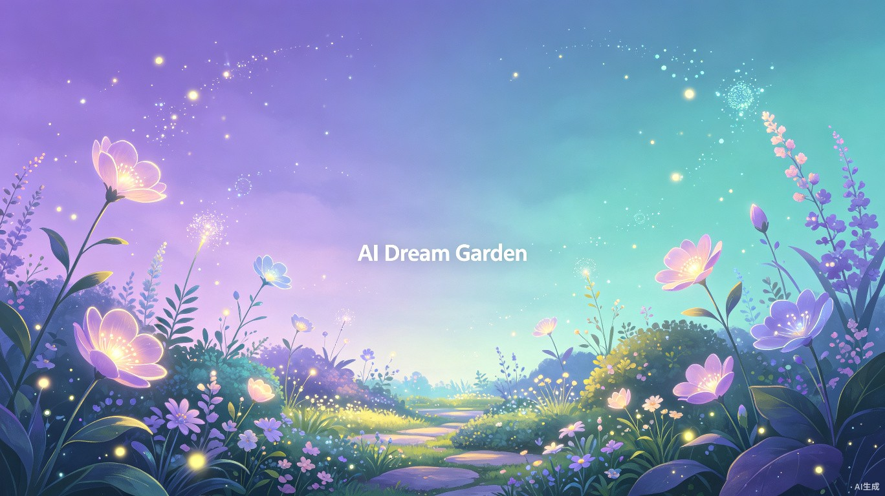
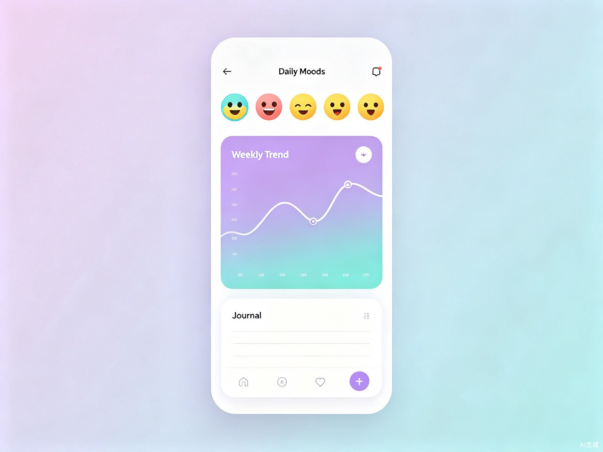

⚛️
React 18
组件化 UI + Hooks

智能心情追踪与 AI 治愈日记 — 用技术守护每一颗心灵
Contents · 目录
为什么年轻人需要情绪管理工具？
AI 梦境花园如何解决这些问题？
四大核心模块深度解析
React + Spring Boot + MySQL 技术栈详解
MySQL 表结构与数据模型
四阶段开发计划与里程碑
Part · 01
在这个快节奏的时代，心理健康已成为不可忽视的议题
Problem · 痛点分析
超过 73% 的职场人存在不同程度的焦虑，但仅有不到 15% 会主动寻求专业帮助。
传统日记需要大量文字输出，大多数人 3 天后便放弃。情绪管理需要更低门槛的介入方式。
写完日记后没有分析与建议，用户无法从记录中发现情绪规律，难以实现真正的自我认知。
Part · 02
用一棵会倾听的树，陪伴你度过每一个情绪的起伏
Concept · 产品概念
AI 梦境花园将抽象的情绪转化为可视化的「花园」：每一次记录心情，花园中就会生长出一朵代表该情绪的花。情绪积极时，花园繁花似锦；低落时，花瓣飘落、但 AI 园丁会送来温暖的话语。
这不是冰冷的工具，而是一个有温度的数字花园。

Features · 核心功能
选择表情即可完成记录，系统自动将情绪数据转化为花园中的花卉生长状态。零门槛记录。
基于情绪历史生成个性化治愈建议、励志语录和放松练习引导，全天候陪伴。
自动分析 7/30 天情绪趋势，生成可视化报告，帮助用户发现情绪规律与触发因素。
连续记录、积极转变等行为可获得成就徽章。游戏化机制提升用户粘性与坚持动力。
Part · 03
React + Spring Boot + MySQL，经典可靠的全栈方案
Architecture · 系统架构
组件化 UI + Hooks
SPA 页面路由
REST API 通信
响应式样式系统
RESTful API 服务
JWT 认证授权
情绪分析与建议
ORM 数据访问层
关系型数据存储
缓存 + 会话管理
用户图片存储
Database · 数据库设计
用户信息表
邮箱/昵称/头像
情绪记录表
情绪值/触发因素
花园状态表
花卉/成长阶段
AI 建议表
治愈语录/练习
徽章成就表
类型/获得时间
情绪报告表
周报/月报数据
Roadmap · 开发路线
AI 梦境花园 — 用技术守护每一颗心灵